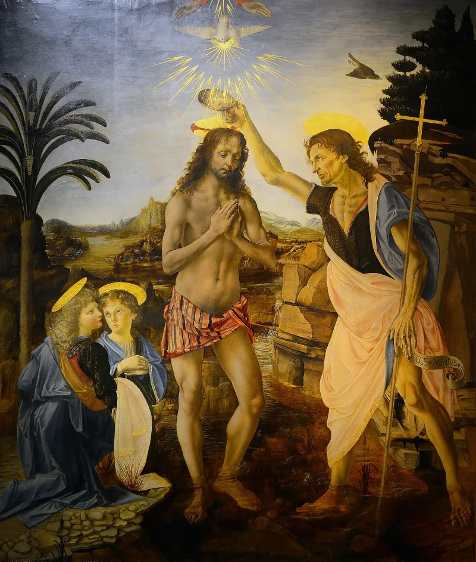
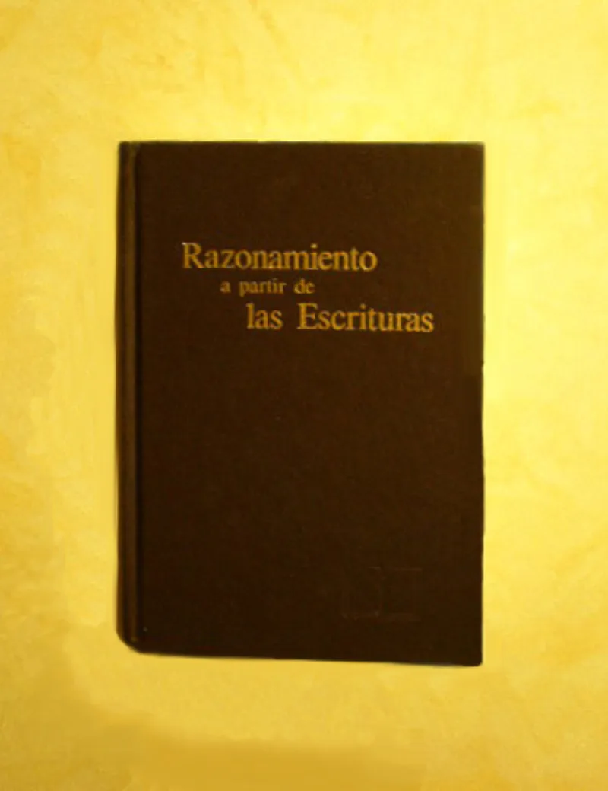
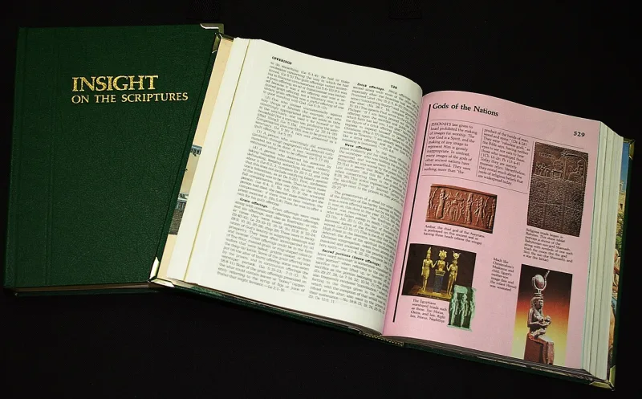

No good counter-argument has been published by the Watchtower.
The Watchtower teaches that the holy spirit is not a person. It is God's active force.
Their brochure Should You Believe in the Trinity? (1989) gives it a chapter.
Reasoning From the Scriptures (1985, p. 381) compares it to electricity.
Their Bible prints "holy spirit" without capitals throughout.
It gives the Spirit personal acts a force cannot perform. Acts 5:3-4 is the sharpest.
Peter says Ananias lied to the holy spirit, then says in the next breath that he lied to God. You cannot lie to a force.
The Spirit speaks and gives orders in the first person (Acts 13:2). It blocks travel plans (Acts 16:6-7).
It can be grieved (Ephesians 4:30). It teaches (John 14:26), bears witness (Romans 8:16), and prays for us (Romans 8:26-27).
And in 1 Corinthians 12:11 it distributes gifts "just as it wills" — even in their own Bible.
Scripture does personify things that are not persons. Wisdom cries out in Proverbs 8.
Sin rules. Blood speaks.
So personal verbs may be a figure of speech. The Greek word pneuma is neuter.
And the spirit is poured out, given in portions and filled into people (John 3:34), which fits a force. Lying to the spirit is lying to God, they say, because it is his force.
Personification fits poetry. It does not fit sustained narrative.
Speaking in the first person, vetoing a journey, and choosing who gets which gift all happen in plain history writing. The gender argument proves nothing, since Greek gender is grammatical.
John uses masculine pronouns for the Spirit in John 16:13-14.
Strong for you. Their defense is real and should be shown.
It does not touch Acts 5:3-4 or 1 Corinthians 12:11.
"Read 1 Corinthians 12:11 in your own Bible. What kind of thing decides for itself who gets what?"



Scripture personifies things all the time, and the Greek word pneuma is neuter.
Witnesses answer that Scripture personifies impersonal things. Wisdom cries out in Proverbs 8. Sin rules. Blood speaks. So personal verbs applied to the spirit are a figure of speech.
The Greek word pneuma is neuter. And the spirit is poured out, filled into people, and given in portions (John 3:34). That fits a force better than a person. Grieving the spirit means grieving God, whose force it is. Lying to the spirit is lying to God for the same reason. On their reading, Acts 5 actually supports them.
Strong for you. A force does not choose who gets which gift.
The personification defense covers isolated poetic texts. It does not cover sustained narrative agency. The Spirit speaks in the first person, vetoes travel plans, and wills the giving of gifts. All of that occurs in plain historical prose, not poetry.
The neuter-gender argument proves nothing, because Greek gender is grammatical. And John uses masculine pronouns for the Spirit in John 16:13-14.
The Witness defense exists and should be shown. But it does not neutralize Acts 5:3-4 or 1 Corinthians 12:11.